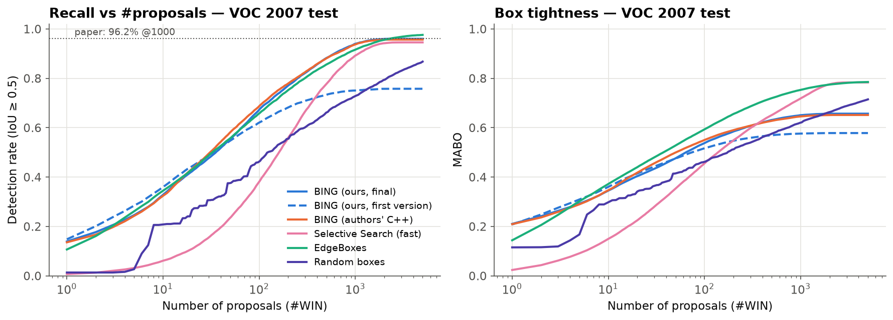
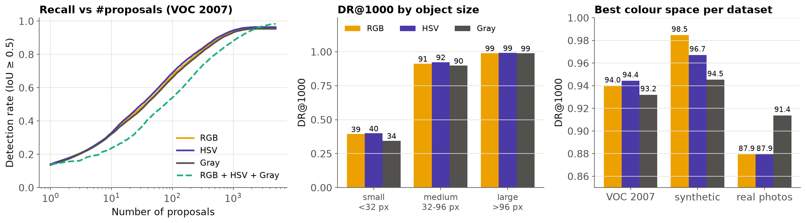
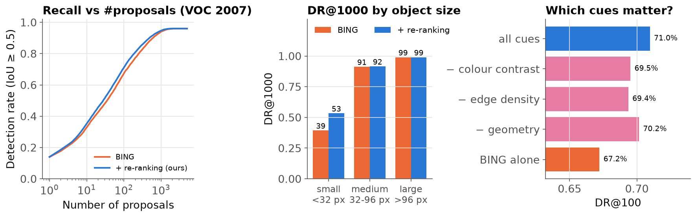
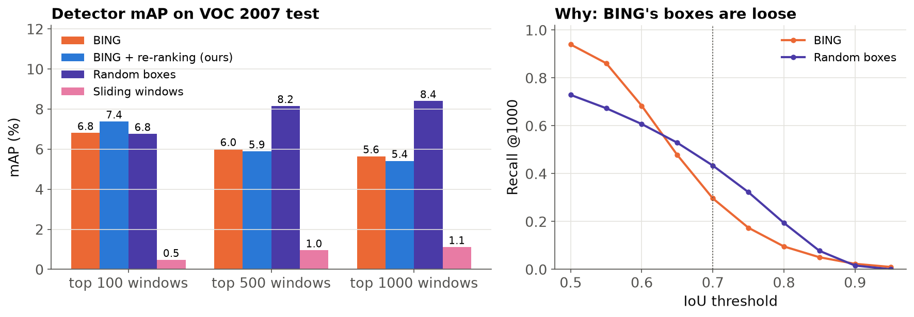

Abstract—Object proposal methods reduce the 105–106 windows a detector would otherwise scan to about a thousand candidates. BING (Cheng et al., CVPR 2014) does this at 300 frames per second with an 8×8 normed-gradient feature, a 64-weight linear model and bitwise AND/POPCOUNT scoring. We re-implemented BING from scratch in Python with compiled kernels and evaluated it on PASCAL VOC 2007 against the authors' own C++ code: our version finds 94.0% of objects in its top 1000 proposals against 93.8% for the original, after we identified two details that the paper's text omits. We extend BING with a third stage that re-ranks its windows using colour-contrast, edge-density and geometric cues, which raises recall in the top 100 from 67.2% to 71.0% and small-object recall from 39.3% to 53.3%. We also compare RGB, HSV and grayscale gradients, test generalisation to unseen classes, compare with Selective Search and EdgeBoxes, build complete detectors on the proposals (up to 19.1% mAP), and multi-thread the implementation to 294 images per second, against 300 for the authors' code on the same machine.
Index Terms—object proposals, objectness, BING, normed gradients, binarization, PASCAL VOC.
Classic object detectors classify every position, scale and aspect ratio of a sliding window. That is 105 to 106 windows per image, and almost all of them are background. Object proposal methods first rank windows by a cheap, class-agnostic "objectness" score, so that an expensive classifier only examines the best thousand or so [3], [5]. BING [1] is among the fastest proposal methods: it observes that objects have closed boundaries, so a window around an object, shrunk to 8×8 pixels, shows a characteristic ring of strong gradients. A 64-weight linear model learns this pattern, and binarizing the model and the features turns each window's score into a few bitwise operations.
This project re-implements, evaluates and extends BING. Our contributions are:
Alexe et al. [3] introduced objectness as a generic measure combining saliency, colour contrast, edge density and superpixel straddling. Selective Search [2] groups superpixels hierarchically and returns the bounding boxes of the groups; its boxes fit objects tightly but it needs about a second per image. EdgeBoxes [4] scores a window by the number of edge contours wholly inside it. BING [1] trades box precision for speed. Hosang et al. [5] compared these methods systematically and showed that recall at higher overlaps predicts detection quality better than recall at IoU 0.5. R-CNN [6] popularised detection on top of proposals with CNN features; Dalal and Triggs' HOG [7] is the classic handcrafted descriptor.
For each pixel the normed gradient (NG) is g = min(|gx| + |gy|, 255), computed with the mask [−1, 0, 1] in each colour channel; the strongest channel is kept. Windows take 36 quantised sizes (w, h) ∈ {16, 32, …, 512}2. For each size the whole image is resized to (8W/w, 8H/h), so that every 8×8 patch of the resized NG map is the 64-D feature of one window.
Stage I is a linear SVM w ∈ ℝ64 trained on the NG features of ground-truth boxes (and their mirror images) against random background windows; the score of a window is s = ⟨w, g⟩. Greedy non-maximum suppression keeps up to 130 windows per size. Stage II calibrates each size with o = vi·s + ti, learned by logistic regression on training windows labelled by IoU ≥ 0.5, because sizes such as 16×512 rarely contain objects. Windows from all sizes are sorted by o.
The filter is approximated with Nw = 2 binary bases, w ≈ Σj βjaj with aj ∈ {−1, +1}64, and each NG value by its top Ng = 4 bits, g ≈ Σk 28−kbk. Each 64-bit vector fits in one machine word, and
⟨aj, bk⟩ = 2·popcnt(aj+ AND bk) − popcnt(bk),
where a+ marks the +1 entries. A window then costs 12 POPCOUNTs instead of 64 multiply-adds. Bit-planes are built with shift and OR operations over rows and columns (the paper's Algorithm 2). Unit tests confirm that the bitwise score equals the floating-point score of the approximated filter and features.
Our implementation uses NumPy, OpenCV and scikit-learn, with Numba compiling the gradient, bit-packing, scoring and suppression loops to machine code. It follows two details of the released code that the paper does not state (Section V-B): window sizes 16–512 clipped to the image, and greedy suppression.
BING ranks windows with a single cue, its edge template. Stage III re-scores BING's windows with 16 handcrafted values per window, each read in constant time from integral images: the Lab colour contrast and lightness difference between the window and a surrounding ring (the window grown by a quarter of its size on each side); the mean gradient energy inside, in the ring, and their log-ratio; the window's centre, distance to the image centre, log area, log aspect ratio, relative width and height, ring share and border contact; and BING's calibrated score and rank. A gradient-boosted tree classifier, trained on the proposals of 2,500 VOC trainval images (positive if IoU ≥ 0.5 with an object), combines them, and windows are re-sorted by its probability. No deep network is involved.
To measure what the proposals are worth, we built a detector in two versions. The handcrafted version warps each window (padded by 1/8) to 64×64 and describes it with HOG [7] (1,764 values) and an 8×4 hue-saturation histogram. The CNN version passes the image once through a ResNet-50 [9] pre-trained on ImageNet, kept frozen, and describes each window by the mean conv4 and conv5 activations inside it (3,072 values, read from integral images of the feature maps). Both train 20 one-vs-rest linear SVMs on VOC trainval with one round of hard-negative mining; the CNN version adds class-specific box regression as in R-CNN [6]. Detections are filtered with per-class non-maximum suppression and scored with the VOC 2007 11-point average precision.
The gradient, scoring and suppression of one window size run inside a single compiled function that releases Python's global interpreter lock. Window sizes of one image can then be processed by a thread pool (lower latency), or whole images can be distributed over threads (higher throughput).
Data. PASCAL VOC 2007 [8], following the paper: train on the 5,011 trainval images, test on the 4,952 test images (12,032 objects; "difficult" objects ignored). We also use a synthetic benchmark of 600/300 images of textured shapes on cluttered backgrounds, and 10 real photographs with 58 annotated objects that are never used for training.
Metrics. The detection rate DR@N is the share of objects covered by at least one of the top N proposals with IoU ≥ 0.5. MABO is the mean (over classes) of the average best overlap per object, measuring box tightness. For detection we report the mean average precision (mAP). All methods are scored by the same evaluator. Speeds were measured on one 4-core CPU in a single session.
Table I compares our implementation with the authors' C++ code run on the same images and scored by our evaluator. The two agree within 0.2 points at every budget. With the authors' own evaluator, which counts box areas with VOC's inclusive pixel convention, their code scores 96.0% at 1000 proposals, close to the 96.2% reported in the paper.
| Method | DR@100 | DR@1000 | DR@5000 | MABO |
|---|---|---|---|---|
| BING, ours | 67.2% | 94.0% | 96.0% | 0.651 |
| BING, authors' C++ | 68.8% | 93.8% | 95.7% | 0.646 |
| BING, paper [1] | – | 96.2% | 99.5% | – |
Our first version followed the paper's text and reached only 75.1%. Running the released code showed two differences (Table II). Its window sizes are 16–512 rather than 10–320, with windows up to twice the image size clipped to it, so near full-image boxes exist; VOC has many large objects. Its suppression is greedy: it accepts the best window, blocks a 5×5 neighbourhood and repeats, whereas keeping only local maxima of each score map discards good windows on smooth maps. Together they close the gap.
| Our BING on VOC 2007 | DR@1000 | DR@5000 | MABO |
|---|---|---|---|
| Paper's text (sizes 10–320, local maxima) | 75.1% | 75.8% | 0.576 |
| + released sizes (16–512, clipped) | 79.2% | 79.7% | 0.607 |
| + greedy NMS only | 92.2% | 94.4% | 0.621 |
| Both (final) | 94.0% | 96.0% | 0.651 |

Table III compares BING with Selective Search (OpenCV's fast mode) and EdgeBoxes (OpenCV's implementation with its pre-trained structured-edge model) on all 4,952 test images, with times per image on one thread. BING finds the most objects up to 1,000 proposals and is about 15 times faster than EdgeBoxes and 77 times faster than Selective Search. Both alternatives draw tighter boxes (higher MABO), and EdgeBoxes overtakes BING at 5,000 proposals (97.6% vs 96.0%). Random boxes show what a method gains over chance.
| Method | DR@100 | DR@1000 | MABO | ms/img |
|---|---|---|---|---|
| BING, ours | 67.2% | 94.0% | 0.651 | 10 |
| BING + re-ranking (ours) | 71.0% | 94.7% | 0.653 | 17 |
| EdgeBoxes [4] | 65.8% | 91.6% | 0.753 | 154 |
| Selective Search, fast [2] | 38.1% | 89.2% | 0.719 | 778 |
| Random boxes | 46.5% | 72.9% | 0.621 | – |
We trained one BING model per colour space (Table IV). On VOC, HSV is slightly best and wins 15 of the 20 classes at 100 proposals; grayscale is lowest because it misses edges between regions that differ only in colour, which hurts small objects most. The ranking depends on the data: RGB is best on the synthetic scenes, where hue is unstable in dark and grey regions, and grayscale transfers best from synthetic training to real photographs. Merging the three ranked lists, as in the paper's BING-Diversified, gives the highest recall at 5,000 proposals (98.4%) but dilutes small budgets. We keep RGB as the default.
| Space | VOC @100 | VOC @1k | VOC small | Synth. @1k | Real @1k |
|---|---|---|---|---|---|
| RGB | 67.2% | 94.0% | 39.3% | 98.5% | 87.9% |
| HSV | 68.9% | 94.4% | 39.9% | 96.7% | 87.9% |
| Gray | 65.9% | 93.2% | 34.5% | 94.5% | 91.4% |
| Merged | 54.0% | 88.0% | 4.3% | – | – |

Following the paper, we trained BING on the trainval images of six classes (bird, car, cat, cow, dog, sheep), with only their boxes as objects, and tested it on the other 14 classes (Table V). Its recall on the unseen classes is within 2.2 points of the model trained on all 20 classes, which supports the claim that BING learns generic objectness rather than class-specific appearance.
| Training classes | Test objects | DR@100 | DR@1000 | DR@5000 |
|---|---|---|---|---|
| 6 (seen) | 14 unseen classes (9039) | 63.5% | 91.1% | 95.2% |
| all 20 | 14 unseen classes (9039) | 66.6% | 93.3% | 95.5% |
| 6 (seen) | 6 seen classes (2993) | 72.6% | 97.2% | 98.0% |
| all 20 | 6 seen classes (2993) | 69.2% | 96.2% | 97.7% |
Re-ranking raises recall at every budget (Table VI, Fig. 3): 67.2% → 71.0% at 100 proposals, and small-object recall at 1000 from 39.3% to 53.3%. Recall at 5,000 cannot change, because re-ranking only re-orders BING's windows. Removing any cue group lowers recall; edge density matters most, especially for small objects. The cost is speed (17 instead of 10 ms per image on one thread). Two other extensions, snapping box sides to strong image edges and adding intermediate window sizes, looked promising on a 300-image subset but did not improve the full test set; we report them as negative results.
| Method | DR@100 | DR@1000 | Small, DR@1000 | AUC |
|---|---|---|---|---|
| BING | 67.2% | 94.0% | 39.3% | 0.719 |
| + multi-cue re-ranking | 71.0% | 94.7% | 53.3% | 0.741 |
| without colour contrast | 69.5% | 94.5% | 51.6% | 0.732 |
| without edge density | 69.4% | 94.3% | 45.0% | 0.732 |
| without geometry | 70.2% | 94.6% | 54.8% | 0.736 |
| + edge refinement (rejected) | 66.8% | 93.6% | 37.0% | 0.718 |
| + finer window sizes (rejected) | 67.1% | 93.9% | 38.4% | 0.719 |

Table VII reports VOC 2007 mAP for the same detector given different windows. With CNN features and box regression, our re-ranked top 100 windows give the best result, 19.1%, against 7.4% with HOG. At 100 windows BING's boxes clearly beat random boxes and sliding windows. With 1,000 windows random boxes catch up (16.0%), because they are tighter: at IoU 0.7, BING's top 1000 cover 30% of objects and random boxes 43%. This agrees with Hosang et al. [5]. The absolute numbers stay well below R-CNN (about 58%) because our network is not fine-tuned.
| Windows | HOG @100 | CNN @100 | CNN+BR @100 | CNN+BR @1k |
|---|---|---|---|---|
| BING | 6.8% | 16.9% | 18.8% | 13.9% |
| + re-ranking | 7.4% | 16.7% | 19.1% | 13.1% |
| Random | 6.8% | 11.4% | 13.8% | 16.0% |
| Sliding | 0.5% | 0.5% | 0.6% | 2.7% |

All timings in Table VIII were measured on the same 4-core machine in one session (images per second on the 300-image speed subset). On one thread our implementation is faster than the C++ code; with one image per thread it reaches 294 images per second, against 300 for the C++ code, which matches the 300 fps reported in the paper.
| Implementation (same machine) | 1 thread | 4 threads |
|---|---|---|
| BING, authors' C++ | 76 | 300 |
| BING, ours: window sizes in parallel | 105 | 186 |
| BING, ours: images in parallel | 98 | 294 |
On the synthetic benchmark: gradient mask [−1 0 1] 98.5% vs Sobel 99.3%; feature bits Ng = 1: 95.6%, Ng = 4: 98.5%; filter bases Nw = 1: 98.1%, Nw = 2: 98.5%; 10 training images: 91.6%, 300: 98.5%. The simple gradient mask is sufficient, two feature bits recover almost all accuracy, and the 64-weight model needs very little training data.
BING's weakness is localisation. Power-of-two window sizes and an 8-pixel stride make its boxes coarse (MABO 0.65), small objects are hard, and these limits show again in detection, where tighter random boxes overtake BING at large budgets. Our re-ranking improves the order of the windows but cannot change their shape; our edge-snapping refinement did not help either, so learned box regression applied to the proposals themselves is the most promising next step. The detector's CNN is frozen; fine-tuning it would raise mAP considerably. The real-photo set (58 objects) is small and serves only as a generalisation check.
Simple gradients, a 64-weight linear model and bit operations find 94% of the objects in PASCAL VOC 2007, and our from-scratch implementation matches the authors' code in accuracy and speed. Our multi-cue re-ranking finds objects sooner, especially small ones; HSV gradients are marginally better than RGB on VOC; BING generalises to unseen classes; and detectors built on the proposals confirm both their value over sliding windows and the cost of BING's loose boxes.
[1] M.-M. Cheng, Z. Zhang, W.-Y. Lin, and P. H. S. Torr, "BING: Binarized normed gradients for objectness estimation at 300fps," in Proc. IEEE CVPR, 2014.
[2] J. R. R. Uijlings, K. E. A. van de Sande, T. Gevers, and A. W. M. Smeulders, "Selective search for object recognition," Int. J. Comput. Vis., vol. 104, no. 2, 2013.
[3] B. Alexe, T. Deselaers, and V. Ferrari, "Measuring the objectness of image windows," IEEE Trans. Pattern Anal. Mach. Intell., vol. 34, no. 11, 2012.
[4] C. L. Zitnick and P. Dollár, "Edge boxes: Locating object proposals from edges," in Proc. ECCV, 2014.
[5] J. Hosang, R. Benenson, P. Dollár, and B. Schiele, "What makes for effective detection proposals?," IEEE Trans. Pattern Anal. Mach. Intell., vol. 38, no. 4, 2016.
[6] R. Girshick, J. Donahue, T. Darrell, and J. Malik, "Rich feature hierarchies for accurate object detection and semantic segmentation," in Proc. IEEE CVPR, 2014.
[7] N. Dalal and B. Triggs, "Histograms of oriented gradients for human detection," in Proc. IEEE CVPR, 2005.
[8] M. Everingham, L. Van Gool, C. K. I. Williams, J. Winn, and A. Zisserman, "The PASCAL visual object classes (VOC) challenge," Int. J. Comput. Vis., vol. 88, no. 2, 2010.
[9] K. He, X. Zhang, S. Ren, and J. Sun, "Deep residual learning for image recognition," in Proc. IEEE CVPR, 2016.